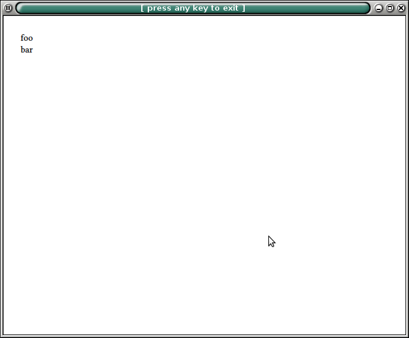
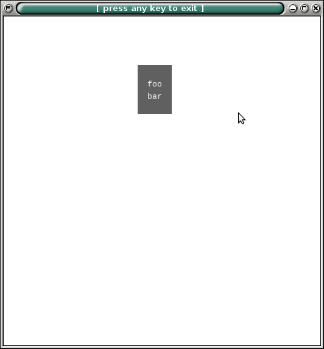

The below Inform6 file is standalone (it doesn't include anything) and contains a copy of the Inform 6.33 definition of Box__Routine for the Glulx case. My question is, how do I modify Box__Routine so that the output (with e.g. Gargoyle) is as nice with Glulx as it is with the ZMachine backend?
#IfDef TARGET_GLULX;
Constant GG_MAINWIN_ROCK 201;
Constant GG_QUOTEWIN_ROCK 202;
Global gg_mainwin;
Global gg_quotewin;
#Ifdef VN_1630;
Array gg_arguments buffer 28;
#Ifnot;
Array gg_arguments --> 8;
#EndIf;
#Stub InitGlkWindow 1;
[ GGInitialise res;
@gestalt 4 2 res; ! Test if this interpreter has Glk.
if (res == 0) {
! Without Glk, we're entirely screwed.
quit;
}
! Set the VM's I/O system to be Glk.
@setiosys 2 0;
res = InitGlkWindow(0);
if (res ~= 0) return;
res = InitGlkWindow(GG_MAINWIN_ROCK);
if (res == 0)
gg_mainwin = glk($0023, 0, 0, 0, 3, GG_MAINWIN_ROCK); ! window_open
if (gg_mainwin == 0) {
! If we can't even open one window, there's no point in going on.
quit;
}
glk($002F, gg_mainwin);
InitGlkWindow(1);
];
[ Box__Routine maxwid arr ix lines lastnl parwin;
maxwid = 0;
lines = arr-->0;
if (gg_quotewin == 0) {
gg_arguments-->0 = lines;
ix = InitGlkWindow(GG_QUOTEWIN_ROCK);
if (ix == false)
gg_quotewin = glk($0023, gg_mainwin, $12, lines, 3, GG_QUOTEWIN_ROCK);
} else {
parwin = glk($0029, gg_quotewin);
glk($0026, parwin, $12, lines, 0);
}
lastnl = true;
if (gg_quotewin) {
glk($002A, gg_quotewin);
glk($002F, gg_quotewin);
lastnl = false;
}
! If gg_quotewin is zero here, the quote just appears in the story window.
glk($0086, 7); ! set blockquote style
for (ix=0 : ix<lines : ix++) {
print (string) arr-->(ix+1);
if (ix < lines-1 || lastnl) new_line;
}
glk($0086, 0); ! set normal style
if (gg_quotewin) {
glk($002F, gg_mainwin); ! set_window
}
];
#EndIf;
[ Main;
#IfDef TARGET_GLULX;
GGInitialise();
#EndIf;
box "foo" "bar";
];
Output with Glulx (compiled with inform -G):

Output with ZMachine (compiled with inform -v5):
